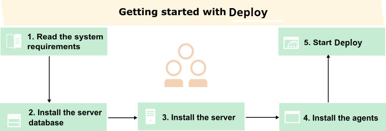
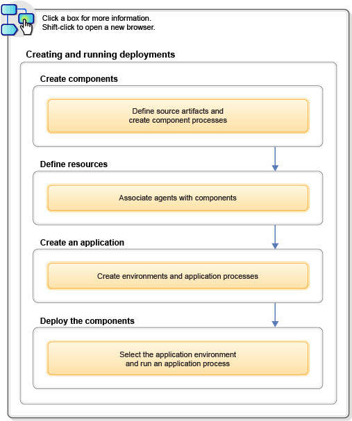

Getting Started
Quickly become productive with IBM DevOps Deploy (Deploy).

Read the system requirements
For supported platforms and requirements, see the System Requirements topic.
Install and start the server
To download the product, visit the IBM® Passport Advantage® website.
See the Installing topic for installation details.
For information on installing licenses, see Licensing
Using Deploy
The following diagram outlines the minimum steps that are required to create and run a deployment. Each box describes a core activity and, taken together, they illustrate the product's primary function. The fastest way to become productive is to work through these steps and understand what each does and how each interrelates with the others.
From the Welcome page, you can work through a wizard that shows you the basic steps to deploying artifacts with Deploy. Click the Welcome tab, and then click Let's creat an application. The wizard guides you step-by-step and provides brief explanations of the entire process for creating a deployment. If you do not see the Welcome tab, click the help menu icon that is located in the upper-right corner of the window. Then, click Welcome. See Setting up the wizard for new users for configuration information.
